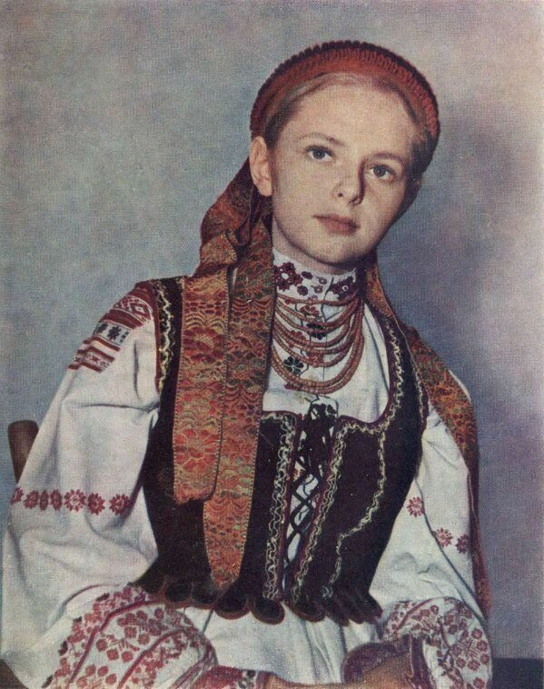
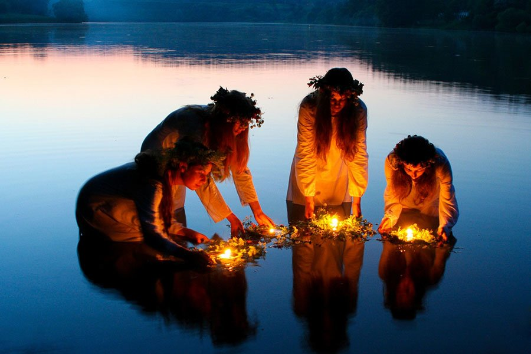
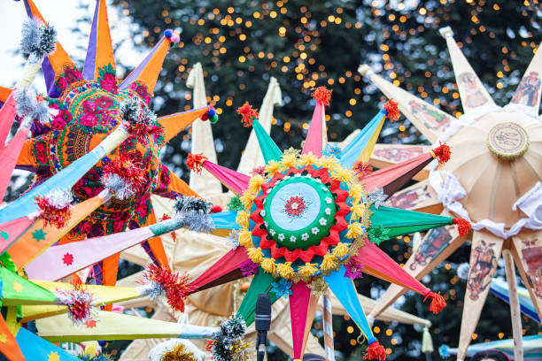

Vyshyvanka (вишиванка) is a traditional Ukrainian embroidered shirt, symbolizing national identity, cultural heritage, and artistry. The intricate embroidery patterns, often created with colorful threads, vary by region and carry symbolic meanings, such as protection, prosperity, or love. Typically crafted on linen or cotton, the designs include geometric, floral, or animal motifs, with red and black being common colors. Worn by both men and women, the vyshyvanka is celebrated during festivals, holidays like Vyshyvanka Day, and as everyday wear, serving as a proud expression of Ukrainian culture and unity.
Vyshyvanka

Ivana Kupala
Ivana Kupala (Івана Купала) is a traditional Ukrainian summer solstice festival celebrated on the night of July 6–7, blending ancient pagan rituals with Christian traditions. Rooted in fertility and nature worship, the festival features symbolic activities like jumping over bonfires for purification, braiding floral wreaths and floating them in water to predict love and marriage, and nighttime searches for the mythical fern flower, believed to bring fortune. It is a joyous event marked by music, dancing, and festive gatherings, preserving Ukraine's rich folklore and connection to nature.

Christmas

Ukrainian Christmas, traditionally celebrated on January 7th according to the Julian calendar, has deep spiritual and cultural significance. Festivities begin on Christmas Eve with Sviata Vecheria (Holy Supper), featuring 12 meatless dishes symbolizing the apostles, such as kutia (sweet wheat pudding), borscht, and varenyky. Families sing kolyadky (carols), decorate with didukh (a sheaf of wheat symbolizing ancestors), and partake in customs like Vertep (nativity plays). Recently, Ukraine has increasingly observed Christmas on December 25th in line with the Gregorian calendar, reflecting a shift toward aligning with Western Christian traditions and further distinguishing from Russian cultural influence. Despite this, many families still honor the January 7th date, blending ancient and modern practices.